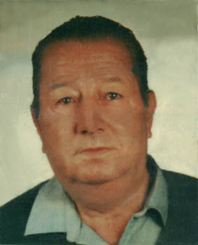

José Martín Mateos
José Martín Mateos 

 Haz clic aquí para detalles de la Familia de José con Amalia García-Luis Alonso
Haz clic aquí para detalles de la Familia de José con Amalia García-Luis Alonso
This page is within a frameset. View the entire genealogy report of Martín Mateos families, or surname index of Martín Mateos pedigrees or report summary of Martín Mateos heritage from "Árbol Genealógico de Manolo y Amalia".
Drawing a Family Tree.
© 2006 GenoPro Inc. All Rights Reserved.